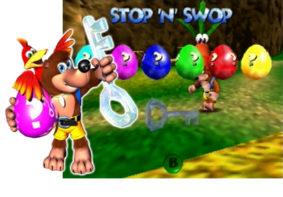

Stop 'n' Swop

The Stop 'n' Swop is a feature that was scrapped from the original Banjo-Kazooie where you collected 6 eggs and 1 ice key.
The idea was that you could send these items to Banjo-Tooie (the sequal to Banjo-Kazooie) by powering off the console and swapping the game really fast in the cartridge slot of the Nintendo 64.
Due to the later revisions of the Nintendo 64, the console could only store the game's data in RAM for a split second, causing the Stop 'n' Swop to be completely impossible.